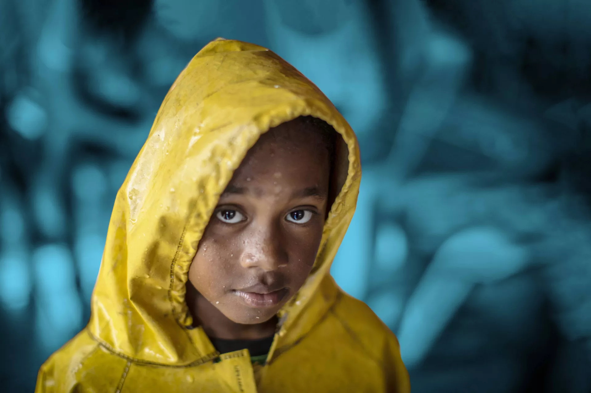

Una triple amenaza de crisis relacionadas con el agua hace peligrar la vida de 190 millones de niños y niñas
Autor/a: Sara Alhattab(UNICEF Nueva York), Fecha: 20 de Marzo de 2023, Localización: África
En África, 190 millones de niños enfrentan riesgos relacionados con el agua, servicios deficientes de saneamiento e higiene, enfermedades y riesgos climáticos. La región se ve afectada por una triple amenaza de agua insegura, cambio climático y conflictos armados, dificultando aún más el acceso a agua potable y saneamiento para los niños. Además, la región enfrenta una inminente catástrofe hídrica debido a eventos climáticos extremos.
El análisis global destaca la urgencia de invertir en soluciones para prevenir muertes evitables, identificando las regiones más afectadas. En los diez países críticos, aproximadamente el 30% de los niños carecen de acceso a servicios básicos de agua y dos tercios carecen de saneamiento básico. Esto conduce a la mayor incidencia de muertes infantiles debido a enfermedades relacionadas con la falta de servicios WASH, representando el 40% de las muertes infantiles en los diez países más afectados.
Estos países críticos también son el 25% de los más vulnerables a riesgos climáticos y medioambientales, experimentando altas temperaturas, disminución de los niveles freáticos y lluvias irregulares. La OCDE clasifica a estos países como frágiles o extremadamente frágiles, y los conflictos armados, como en Burkina Faso, amenazan los avances en el acceso a agua potable y saneamiento, dejando a más de 830,000 personas sin acceso a agua potable en el último año, la mitad de ellas niños.
- Aumentar rápidamente la inversión en el sector, incluida la procedente de la financiación mundial para el clima.
- Reforzar la resiliencia climática en el sector de WASH y en las comunidades.
- Dar prioridad a las comunidades más vulnerables dentro de los programas y las políticas de WASH.
- Aumentar la eficacia y la rendición de cuentas de los sistemas, la coordicnación y la capacidad para prestar servicios de agua y saneamiento.
- Aplicar el Marco de Aceleración Mundial del ODS 6 de ONU-Agua e invertir en los aceleradores más importantes.
La falta de acceso a necesidades básicas como agua potable y saneamiento provoca muertes evitables, causando un dolor inmenso a las familias. Según Wijesekera, invertir en servicios resilientes al clima no solo protege la salud actual de la infancia, sino que también asegura un futuro sostenible para las generaciones futuras.
En el informe se define la "triple amenaza" o "triple carga" como la situación en la que el acceso a servicios básicos de agua o saneamiento está por debajo del 50%. Esto ocurre en los 20 países con la mayor carga de muertes de menores de 5 años debido a la falta de servicios de agua, saneamiento e higiene (WASH), y también se ubica en el 25% de los países con mayor riesgo de enfrentar peligros climáticos y medioambientales.
La información para el análisis se ha extraído de:
- Programa Conjunto OMS/UNICEF de Monitoreo: Progress on household drinking water, sanitation and hygiene 2000-2020: five years into the SDGs
- OMS: Deaths by Cause, Age, Sex, by Country and by Region, 2000-2019
- UNICEF: The Climate Crisis is a Child Rights Crisis: Introducing The Children's Climate Risk Index